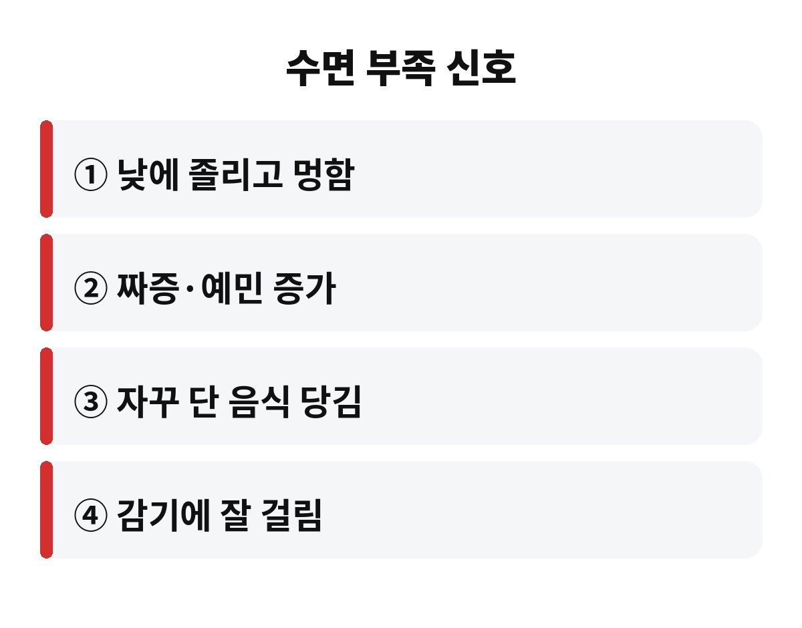
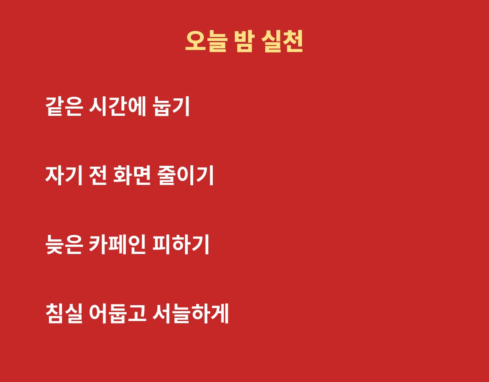

수면 부족 증상은 낮에 심하게 졸리고, 집중이 안 되고, 괜히 짜증이 늘어나는 것부터 시작해요. 성인 기준으로 하루 7시간 이상 자라고 권고하는데, 이보다 적게 자는 날이 계속되면 몸이 신호를 보냅니다.
요즘 아침마다 피곤하다는 직장인이라면 그냥 넘기지 마세요. 커피로 버티는 그 피곤함, 정말 괜찮은 걸까요?
가장 먼저 느끼는 건 낮 동안의 졸음이에요. 회의 중에 눈꺼풀이 무겁고, 같은 문장을 몇 번이나 다시 읽게 되죠. 집중력과 기억력이 떨어지는 것도 흔한 신호예요.
감정도 영향을 받아요. 평소엔 웃어넘기던 일에 짜증이 나고, 사소한 말에 예민해진다면 잠이 모자란 건 아닌지 돌아볼 필요가 있어요. 수면 부족 증상은 몸보다 기분에서 먼저 티가 나기도 합니다.
잠을 충분히 못 자면 식욕과 관련된 호르몬 균형이 흐트러지는 것으로 알려져 있어요. 그래서 밤늦게 라면이나 과자, 달달한 음료가 유난히 당기죠. 의지가 약해서가 아니라 몸이 에너지를 더 달라고 하는 거예요.
이런 날이 반복되면 체중 관리가 어려워지고, 혈당이나 혈압에도 좋지 않은 영향을 줄 수 있다고 해요. 잠이 부족한 채로 다이어트를 하면 더 힘든 이유가 여기에 있어요.
| 요점 3줄 | ① 성인은 하루 7시간 이상이 권장돼요 ② 졸음·짜증·집중력 저하가 대표 신호예요 ③ 단 음식이 당기면 잠부터 의심해 보세요 |
많은 분이 평일에 모자란 잠을 주말에 몰아서 채우려고 해요. 어느 정도 피로는 풀리지만, 수면 시간이 들쭉날쭉해지면 생체리듬이 흔들려서 월요일 아침이 더 힘들어질 수 있어요.
그래서 주말에도 평소보다 한두 시간 정도만 더 자고, 기상 시간을 크게 바꾸지 않는 게 좋아요. 낮잠을 잔다면 짧게 20분 안팎으로 끝내야 밤잠을 방해하지 않아요.
하루 이틀 모자란 잠은 커피 한 잔으로 버틸 수 있어요. 문제는 이런 날이 몇 주씩 이어질 때예요. 면역력이 떨어져 감기에 자주 걸리고, 피부가 푸석해지고, 운동을 해도 회복이 더디다고 느끼게 됩니다. 이를 흔히 수면 빚이라고 부르는데, 빚처럼 조금씩 쌓이다가 어느 순간 컨디션 전체를 무겁게 눌러요.
운전이나 기계 작업처럼 집중이 필요한 일에서는 더 조심해야 해요. 잠이 모자란 상태에서는 반응 속도가 느려지고, 본인은 괜찮다고 느껴도 실수가 늘어날 수 있거든요. 특히 졸음운전은 큰 사고로 이어질 수 있으니 졸리면 꼭 쉬어 가세요.
마음 건강과도 연결돼요. 잠을 못 자면 불안하고 우울한 기분이 커지기 쉽고, 기분이 가라앉으면 다시 잠이 오지 않는 악순환이 생기기도 해요. 그래서 수면 습관은 단순히 피곤을 푸는 문제가 아니라 하루 전체의 기분과 일의 능률을 지키는 기본기라고 생각하시면 좋아요.
첫째, 매일 같은 시간에 눕고 일어나기예요. 둘째, 자기 전 한 시간은 스마트폰 화면을 줄이세요. 밝은 빛은 뇌에게 아직 낮이라고 속삭이거든요. 셋째, 오후 늦게 마시는 커피와 에너지 음료를 줄여 보세요. 카페인은 생각보다 오래 몸에 남아요.
넷째, 침실은 어둡고 조금 서늘하게 유지하세요. 다섯째, 누워서 잠이 안 온다면 억지로 버티지 말고 잠깐 일어나 조용한 활동을 하다가 졸릴 때 다시 눕는 게 도움이 돼요. 작은 습관이지만 일주일만 지켜도 아침 컨디션이 달라지는 분이 많아요.
그래도 몇 주 넘게 잠이 안 오거나, 자는 중 심하게 코를 골고 숨이 멎는 것 같다는 말을 듣는다면 수면 질환일 수 있으니 병원 상담을 받아 보세요. 여러분은 요즘 평균 몇 시간 주무시나요? 댓글로 알려 주세요. 도움이 되셨다면 구독과 공감도 부탁드려요.


※ 이 글은 일반적인 건강 정보이며 진단·치료를 대신하지 않습니다. 증상이 지속되면 전문의 상담을 권장합니다.